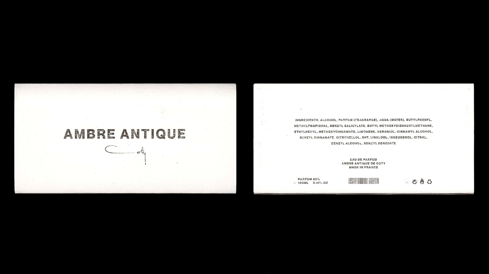
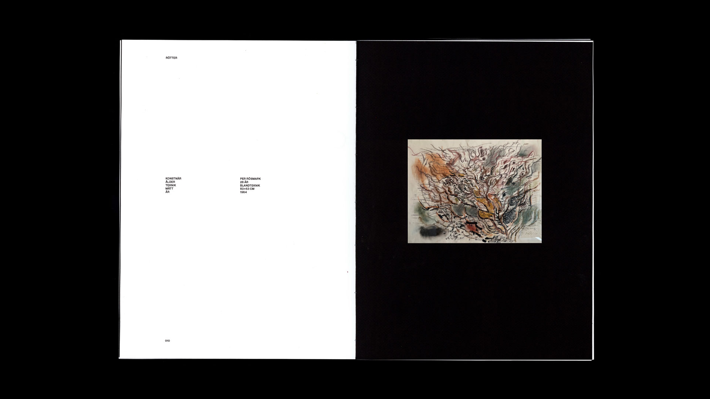

Visual identity for the perfume Ambre Antique by Coty released in 1905, an identity intended to challenge the convention of oriental perfumes. The new iteration of Ambre Antique takes inspiration from the design language of ancient Greek black-figured ceramics to combine it with a contemporary minimalism – creating a friction between the two aesthetics. Mixed media of 3D rendering and physical packaging design.
Eric Rösmark
Designer & Art Director
ericrosmark@gmail.com
+46 704-218-696
Designer at Bold Scandinavia.
Graduated Beckmans College of Design
in 2022 with a BFA in Visual Communication.
Previously at Essen International,
Stockholm Design Lab.

Ambre Antique
2020
Art Direction
Product Design
Visual Identity
3D Design
2020
Passa
2021
Art Direction
Graphic Design
passa /'pa,sa/. verb.
n. 1. fit, suit; be suitable 2. fit; be of the right size and cut 3. pass 4. give, hand over 5. look after. An abstract timeline, told through poetry, about the store I worked in for 7 years. A series of three riso printed posters, printed on 200g watercolor paper, dimensions 297 × 420 mm (A3). Type set in Favorit by Dinamo Type.
2021
Material Tales
2020
Art Direction
UX / UI Design
Visual Identity
Web Design
Visual identity made in collaboration with the second year fashion students at Beckmans College of Design showcasing the creation of magic from materials. The project was realized through a responsive website, a short film, still photography of all 35 looks as well as 13 close-up 3D scans of the materials used to create the different garments. Made in collaboration with Alexander Peri, Alva Nylander, Hedvig Moberg, Joel Eriksson, Linnea Jacobson & Tuva Larsson. Experience the visual world of Material Tales.
2020

Rötter
2022
Art Direction
Editorial Design
Graphic Design
Degree Project from Beckman College of Design. Rötter is a visual exploration and documentation of my grandmother's brother Per Rösmarks life and artistry. Per committed suicide at the age of 28 leaving behind an immense amount of art. Although I've never met Per he's always been present both in conversations and on the walls. The project is a process and an attempt to get to know a person by making an artistic collaboration through our related practices. Rötter was realised in a 112 page hand bound book with a link stitched open spine, all set in Neue Haas Grotesk. Displayed at the graduation exhibition Formation at Beckmans College of Design in the spring of 2022.
2022

Sequence
2021
Art Direction
Editorial Design
Visual Identity
Sequence Paper is a magazine about time and our relationship to it. The magazine features a non-linear narrative that affectionately blends together different perspectives regarding the past, the present and the future. It aims to capture a distinctive yet timeless editorial identity while simultaneously being contemporary. The magazine can be read from both directions in a palindrome-like sequence. Printed at Newspaper Club, London, in uncoated broadsheet format – with an exclusive edition of 50 copies. Featuring poetry from Johan Nordbäck & Antonella Basagni. Made in collaboration with: Alexander Peri, Clémentine Berglund & Joel Eriksson.
2021
Formation
2022
Art Direction
UX / UI Design
Visual Identity
Web Design
Visual Identity and digital platform for Beckmans College of Design's degree exhibition 2022. Formation, the action of forming or process of being formed, is the culmination of the journey all students undergo during their three years at Beckmans College of Design. The school provides the tools which the student use to shape their own design processes, as well as themselves into designers. My key responsibility was to design the website in close collaboration with developer Vincent Orback. Visual identity made in collaboration with: Jonna Lindberg, Maja Schein and Sara Solén. Explore the digital platform for Formation.
2022
The Glow Pt. 2
2020
Art Direction
Graphic Design
3D Design
Conceptual album cover for The Glow Pt.2 (2001) by The Microphones. Mixed media techniques featuring 3D typography inspired by black metal logotypes. The back sleeve features poetry that interprets the album's title track in swedish. Made as part of the course "Poesi att göra" at Beckmans College of Design.
2020
Grönsaksdisken
2021
Art Direction
Front-End Development
UX / UI Design
Web Design
Have you ever thought about how different vegetables taste depending on what season it is? It can feel difficult to be seasonally smart when navigating through the vegetable counter when we're shopping. Grönsaksdisken (The Vegetable Counter) is an application that helps you stay seasonally smart, all year round, and helps us contribute towards a more sustainable planet! Displayed at the exhibition Food for Thought at Svenskt Tenn in the spring of 2021. Made in collaboration with Jonna Lindberg.
2021
Typografi
2019
Art Direction
Graphic Design
A spiral bound book about typography. A project about movement, inspired by movie scripts and revisions. Case study featuring the work of Saul Bass and Richard Alan Greenberg. The first project I did at Beckmans College of Design, together with my talented classmates.